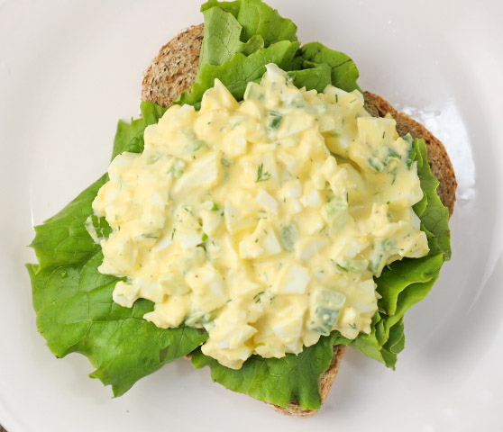

>
Egg Salad
Egg Salad

Introduction
The simple, low calorie and ever reliable egg salad... Perfect for a quick, cheap meal on a hot summer day.
Total Cooking Preparation:
- Preparation: 10 minutes
- Cook Time: 15 minutes
- Additional Time: 10 minutes
- Total Time: 35 minutes
Ingredients:
(Quantity for 4 servings)
- 8 large eggs
- ½ cup mayonnaise
- ¼ cup chopped green onion
- 1 teaspoon prepared yellow mustard
- ¼ teaspoon paprika
- salt and pepper to taste
Step-by-Step Preparation:
- Place eggs in a saucepan and cover with cold water. Remove from hot water, cool, peel, and chop.
- Bring water to a boil and immediately remove from heat.
- Cover and let eggs stand in hot water for 10 to 12 minutes.
- Remove from hot water, cool, peel, and chop.
- Place chopped eggs in a bowl; stir in mayonnaise, green onion, and mustard. Season with paprika, salt, and pepper.
- Stir and serve on your favorite bread, crackers, or salad greens.
Home